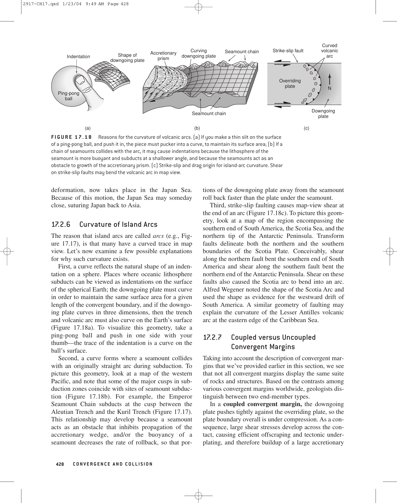

Paleomagnetism is the study of the Earth's ancient magnetic field preserved in ferromagnetic minerals (chiefly titanomagnetite and hematite) within igneous, sedimentary, and metamorphic rocks. When basaltic lava cools below the Curie temperature of magnetite ($T_C \approx 580^\circ\text{C}$), its magnetic domains lock in the exact direction and intensity of the ambient geomagnetic field at that instant, acquiring Thermo-Remanent Magnetization (TRM).
Positive anomalies occur where remnant crustal magnetization reinforces the present normal field; negative anomalies occur where reversed remnant magnetization cancels part of the present field.

| Paleomagnetic Investigation | Primary Geophysical Signal | Major Scientific Breakthrough |
|---|---|---|
| Geomagnetic Polarity Reversals | $180^\circ$ flip in declination and inclination signs | Establishment of GPTS; proof of Vine-Matthews-Morley seafloor spreading |
| Apparent Polar Wander Paths (APWP) | Systematic shift of paleomagnetic pole positions over time | Quantitative proof of continental drift and supercontinent assemblies |
| Paleolatitude Determination | Magnetic inclination ($\tan I = 2 \tan \lambda$) | Tracking the rapid northward flight of India during the Cretaceous |
| Magnetostratigraphy | Correlation of normal/reversed chrons across sedimentary sections | High-resolution global chronostratigraphic correlation across continents |
| Remanent Magnetization Mode | Acquisition Mechanism | Host Lithology | Geological Application |
|---|---|---|---|
| Thermo-Remanent Magnetization (TRM) | Cooling below Curie temperature ($T_C = 580^\circ\text{C}$) | Basaltic lavas, gabbros, dolerite dykes | Seafloor spreading stripes, pole reversal timescale |
| Chemical Remanent Magnetization (CRM) | Precipitation / oxidation of magnetic grains through critical volume | Sedimentary red beds, diagenetic hematite | Dating diagenetic events, secondary overprints |
| Depositional Remanent Magnetization (DRM) | Mechanical alignment of settling magnetic particles in water column | Deep-sea marine clays, lake varves | High-resolution magnetostratigraphy |
| Viscous Remanent Magnetization (VRM) | Long-term exposure to ambient field at low temperature | Any rock over geologic time | Unwanted secondary noise removed by demagnetization |